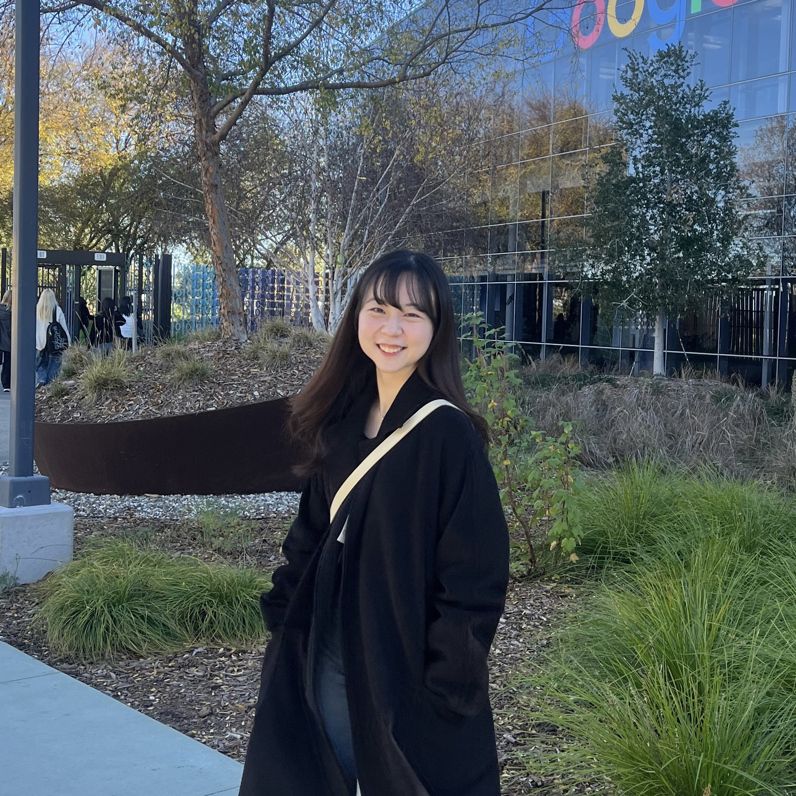

|
Yoojin Oh
I'm an UG student at Ewha Womans University majoring in Artificial Intelligence,
and will be starting my MS at KAIST AI from Spring 2026.
I'm currently interested in steering diffusion sampling trajectories at inference time
to guide image generation in desired directions without additional training.
My previous research experience includes Weakly-Supervised Object Localization (WSOL) and self-supervised Multi-modal Learning.
Email /
CV /
Scholar /
Github
|

|
News
· [2025.06] A paper ( SteeringTTA) is accepted to ICML PUT Workshop 2025.
|
|
|
Beyond Softmax: Dual-Branch Sigmoid Architecture for Accurate Class Activation Maps
Yoojin Oh, Junhyug Noh
BMVC, 2025
project page
/
arXiv
/
code
To mitigate two fundamental softmax-induced distortions: Additive Logit Shift and Sign Collapse,
we propose a simple, architecture-agnostic dual-branch sigmoid head that decouples localization from classification.
|
|
|
SteeringTTA: Guiding Diffusion Trajectories for Robust Test-Time-Adaptation
Jihyun Yu, Yoojin Oh, Wonho Bae, Mingyu Kim, Junhyug Noh
ICML PUT Workshop, 2025
arXiv
We propose SteeringTTA, an inference-only test-time adaptation framework that applies Feynman-Kac steering to diffusion-based input adaptation.
Using pseudo-label driven rewards and multiple particle trajectories, it balances exploration and confidence through top-k probabilities and entropy scheduling.
|
|
{kind=link}